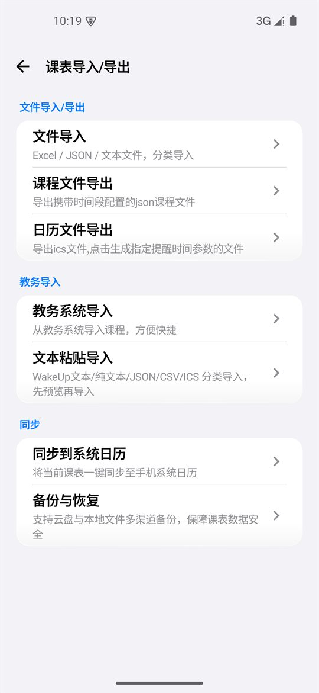
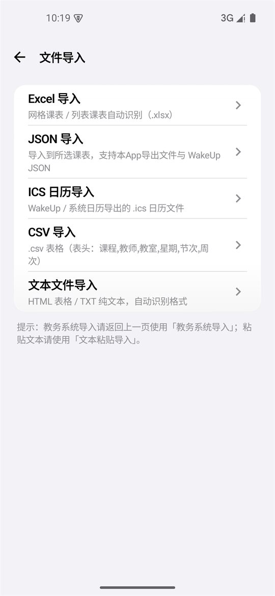
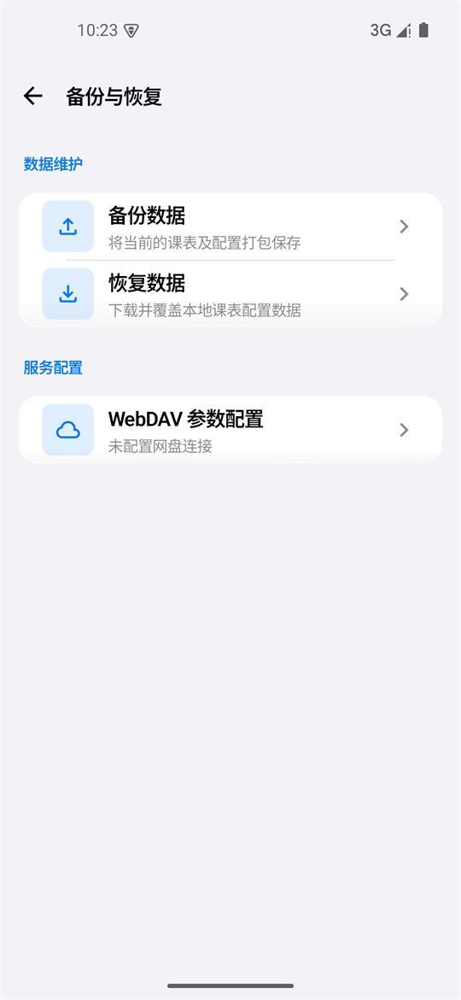
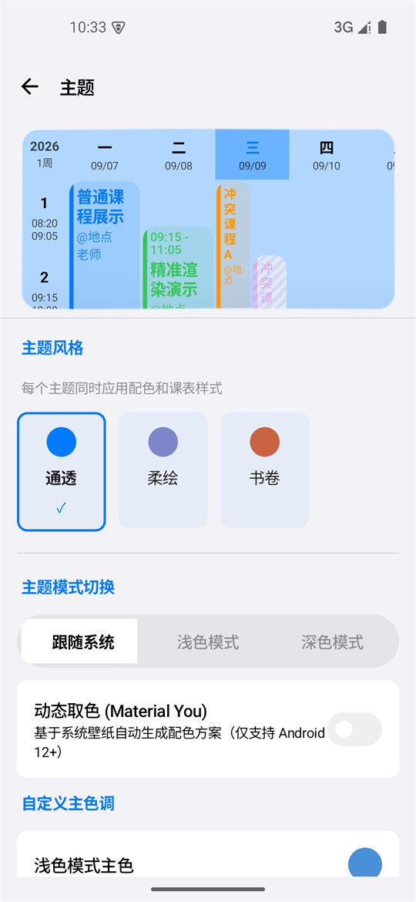

功能说明
十三类能力，逐项说清楚
这一页不是营销列表，而是把每个功能「解决什么问题、具体怎么用」写明白，方便你在装之前判断它是否合适。 所有描述对应 v3.56.5。
功能总览
| 模块 | 能力 |
|---|---|
| 今日课表 | 当天课程速览、下节课倒计时卡、「正在上课」高亮、今日待办、明日预告 |
| 周课表 | 左右滑动切换周次、课程块长按调整、撞色自动修正、隐藏周末与非本周课程 |
| 日程 | 日期轴 + 整月日历，待办 / 活动 / 考试 / 作业分类，与今日页完成状态双向同步 |
| 教务导入 | 内置 1700+ 所高校索引、7 类通用适配器、160+ 所学校专属脚本、在线安全更新 |
| 情侣课表 | 独立课表：完整编辑、教务 / 文件多形式导入、独立作息、双人同显叠加 |
| 多作息方案 | 夏令时 / 冬令时多方案、按日期自动切换、自定义时间段（后节自动顺延） |
| 学期管理 | 多学期并排管理、点击即设当前学期、状态自动判定、学期进度条 |
| 桌面小组件 | 多尺寸样式、明日预告、深色适配、每日零点自动更新 |
| 课程提醒 | 课前提醒、上课期间勿扰 / 静音、节假日避开、状态栏灵动岛（Android 16） |
| 备份同步 | JSON 导入导出、ICS 日历导出、系统日历同步、WebDAV 云备份 |
| 个性化 | 书卷 / 通透 / 柔绘三套主题、动态取色、自定义配色与布局、全局动效设置 |
| 多语言 | 简体中文、繁体中文、English，跟随系统自动切换 |
今日课表
打开 App 落地的第一屏，回答「我今天到底要上什么」。核心是一张会随时间变化的时间轴：已结束的课程变淡沉底，正在上课的高亮并显示剩余时间，未开始的排在下方。
- 下节课卡片显示课程名、教师、地点与起止时间，三种策略可选：自动指向下一次课、已结束变淡、课后消失。
- 今日课程时间轴按节次排列，每张卡显示节数、地点、教师，以及从备注里识别出的「课程类型」「学时」等结构化信息。
- 今日待办与课程同屏，可直接勾选完成，完成后自动沉底并渐变降透明；待办创建统一由「日程」页承载，这样创建的待办会直接出现在今日页。
- 明日预告列在页面底部，避免第二天早上才发现有早八。


周课表与排版
周一至周日的网格视图，左侧是节次序号与时间段，右侧是课程彩块。左右滑动切换周次，点击顶部周次胶囊可以快速跳到指定周，长按课程块可直接调整位置与高度。
- 字号自适应缩放：课程块文字随实际可用宽度动态缩放，窄块不裁切、宽块更清晰。
- 地点智能换行：优先在
@、-、中英文括号等分隔符处断行，避免A-302被拆成A-3 / 02。 - 信息优先级重排：按「名称 > 地点 > 教师」取舍，紧凑块自动隐藏次要信息。
- 撞色自动修正：同名课次统一颜色，不同课程优先分配未占用的颜色，整张表配色稳定可辨。
- 可隐藏周末与「非本周课程」，让单双周课表只显示当周真实要上的课。
日程与待办
第四个 Tab，把课程之外的安排也收进来。日期轴左右滑动浏览、点击选中，下拉可展开整月日历；课程与待办、活动、考试、作业在同一时间轴上混排。
- 完成状态双向同步：今日页勾选的待办，在日程页以删除线 + 变淡呈现；反向亦然。
- 待办默认不带时间，需要时关掉「全天」开关即可指定具体时间。无时间的待办卡片整行铺满，不显示占位「--:--」。
- 分类清晰、可长按删除、支持编辑，右下角「+」一键新增。
教务一键导入
新课表最麻烦的一步是照着教务系统手抄。「上课」把这一步做成一次点击，并且把适配资源全部内置离线——新用户不联网也能完成导入。
- 1700+ 所高校索引，按本科 / 专科、研究生、通用工具分组，配 A–Z 字母索引与搜索。
- 7 类通用教务适配器：超星、正方、URP、青果、强智、金智、南软等主流系统统一处理。
- 160+ 所学校专属适配脚本，处理特殊页面与登录流程：强制电脑版 + 一次点击完成导入、WebVPN 双入口、API 直取等。
- 桌面 UA + 1280px 视口修复，解决部分学校手机端教务菜单打不开课表的问题。
- 在线安全更新：适配资源支持远程更新，逐文件
sha256校验，校验失败自动回退内置资源，不影响导入。 - 支持学期选择、一键导航到课表，兼容验证码 / CAS 统一身份 / WebVPN 等多种登录形态。
学校没被适配？先试通用适配器；仍失败可发邮件到 hhixingchen520@163.com 或在 GitHub 提 Issue，说明学校名称与教务系统类型即可。
文件导入导出
教务之外，还有完整的文件通道：五类导入、两种导出，覆盖从同学那里拷课表、从旧 App 迁移、把课表送进系统日历等场景。
| 方向 | 格式 | 典型用途 |
|---|---|---|
| 导入 | Excel / JSON / ICS / CSV / HTML、TXT | 从旧版备份、同学分享或教务网页导出的内容恢复课表 |
| 导出 | JSON（含时间段与学期设置） | 换机、重装后一键还原完整数据 |
| 导出 | ICS（可指定提醒时间） | 导入 iOS / Android / 桌面日历，自带课前提醒 |
导入前先预览、可逐条编辑，再选择「导入到当前课表 / 存为新课表 / 覆盖」，避免手滑覆盖掉已有数据。


情侣课表
从 v3.52.0 起，情侣课表升级为独立课表实体，不再依附本人课表——它有自己的课程、作息时间与学期配置。
- 在学期管理页与本人课表并排展示（带 ❤ 标记），支持添加 / 查看 / 重命名 / 删除。
- 完整编辑能力：点击课程即可修改名称、教师、地点、周次、节次与颜色，也可手动添加课程。
- 多形式导入：教务系统导入、Excel / JSON / 文本文件导入，导入时选择目标课表即可。
- 独立作息：可单独设置 TA 课表的节次时间（含多作息方案）。
- 双人同显时双方课程分别按各自作息换算位置；冲突检测精确判断周次是否重叠，本人课程优先。课程卡顶部是否显示起止时间可开关（默认关闭）。
- 可单独显示情侣课表；旧版本已导入的数据在升级时自动迁移，备份与恢复完整支持。
多作息方案
一张课表可同时保存多套上课时间，并按「月-日」生效区间自动切换，告别每学期手动改时间。
- 内置默认 / 夏令时 / 冬令时，也可新建自定义方案。
- 支持跨年区间，例如
10-01 ~ 次年 04-30。 - 改动一节，后方整体顺延：修改某一节的结束时间后，后面节次按「一节课时长 + 课间休息」逐节重排至 23:59，不再需要逐节手改。


学期与课程管理
学期管理
- 多学期并排管理，点击任意学期卡即可把它设为当前学期，列表实时重排，「查看课表」才跳转课表页。
- 历史学期状态按日期自动判定（未开始 / 进行中 / 已完成），同学年内按开始日期自动排序。
- 当前学期卡带进度条：第 N 周 / 共 M 周 · 已过 P%；长按可重命名。
- 新建学期支持三种方式：教务导入 / 手动创建 / 备份恢复。
课程管理
- 按课程名聚合查看与编辑全部课程，批量处理同名课程更方便。
- 课程调动：把某天所有课一键调到新日期（应对临时调课、放假补课）。
- 快速删除：按周次 / 星期 / 指定日期批量清理。
- 课程支持记录学分、考核方式、实验课三个结构化字段，并在导入时从备注文本自动识别中英文写法（如
学分 3.5，考核方式：考试，实验课）。

桌面小组件
不打开 App 也能看到今天要上什么。提供多种尺寸与样式的桌面、锁屏小组件，直出「今天 / 明天」课程概览与当日课程数。
- 深色模式有对应外观，点按可直达课程详情。
- 每日零点自动更新：无需打开 App，每日 00:05 自动同步课表、重排提醒并刷新所有小组件；跨天换周不再依赖手动打开。
- 小组件数据读取超时保留上一份快照，不会突然刷成空白。
课程提醒与免打扰
- 课前提醒：支持系统精确闹钟与 WorkManager 两条调度路径。
- 上课免打扰：上课期间自动切换勿扰（DND）或静音，下课自动恢复。
- 节假日避开：内置全年节假日数据，假期里的课不打扰。
- 状态栏灵动岛（Android 16 实时更新）：常驻显示当前 / 下一节课状态，实时刷新上课进度与剩余时间；只在当天第一节课前至最后一节课后运行，其余时间零常驻更省电，低版本自动降级为持续通知。
备份、迁移与日历同步

- JSON 导入 / 导出：完整备份与迁移课表及作息，含多方案作息与情侣课表。
- ICS 导出：导入 iOS / Android / 桌面日历，一键对齐系统日历并自带提醒。
- 系统日历同步：把当前课表写入系统日历账号。
- WebDAV 云备份：自托管云端自动备份与恢复，备份服务器由你选择。
外观与动效
- 三套主题：书卷（暖砂纸底 + 赤陶主色，衬线标题，纸页层叠转场）、通透（iOS 26 Liquid Glass 玻璃质感，systemBlue 主色，物理弹簧动效）、柔绘（柔和晕染渐变 + 雾紫配色，漫射柔光，零过冲缓动）。每套主题同时决定配色、课表样式与动效语言。
- 主题模式：跟随系统 / 浅色 / 深色。
- 动态取色（Material You，Android 12+）：基于系统壁纸自动生成配色方案，也可自定义主色调。
- 自定义背景图片、格子高度 / 圆角 / 间距 / 透明度，以及课程块颜色与内容显示样式；课程配色可独立成页管理并一键重置。
- 全局动效系统：三档动效速度倍率 + 九组可独立开关的动画分组 + 屏幕刷新率设置 + 「减弱动态效果」无障碍开关；触摸反馈全站覆盖。
- 我的信息页：头像、昵称、个性签名、学校、学院、专业、年级。


多语言与无障碍
- 简体中文、繁体中文、English 三套界面语言，跟随系统自动切换。
- 「减弱动态效果」开关会同时关闭过渡动画与加载指示器动画时钟，兼顾无障碍与省电。
- 关键操作按钮补充无障碍描述，日程页菜单等此前缺失处已补齐。